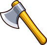
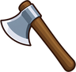
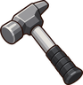
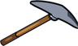
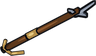
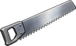
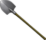
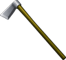
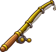
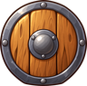

Smith Herrera
Dialogue
“Castamar steel. Fold it twelve times and it'll outlive you.”
Shop
| Item | Price |
|---|---|
 Axe | 20 gold |
 Steel Axe | 60 gold |
 Mining Hammer | 20 gold |
 Steel Pickaxe | 60 gold |
 Harpoon | 40 gold |
Buys
| Item | Pays |
|---|---|
| Axe | 1 gold |
 Saw | 1 gold |
| Mining Hammer | 1 gold |
 Shovel | 1 gold |
 Hoe | 1 gold |
 Fishing Pole | 1 gold |
| 1 gold | |
 Small Shield | 1 gold |